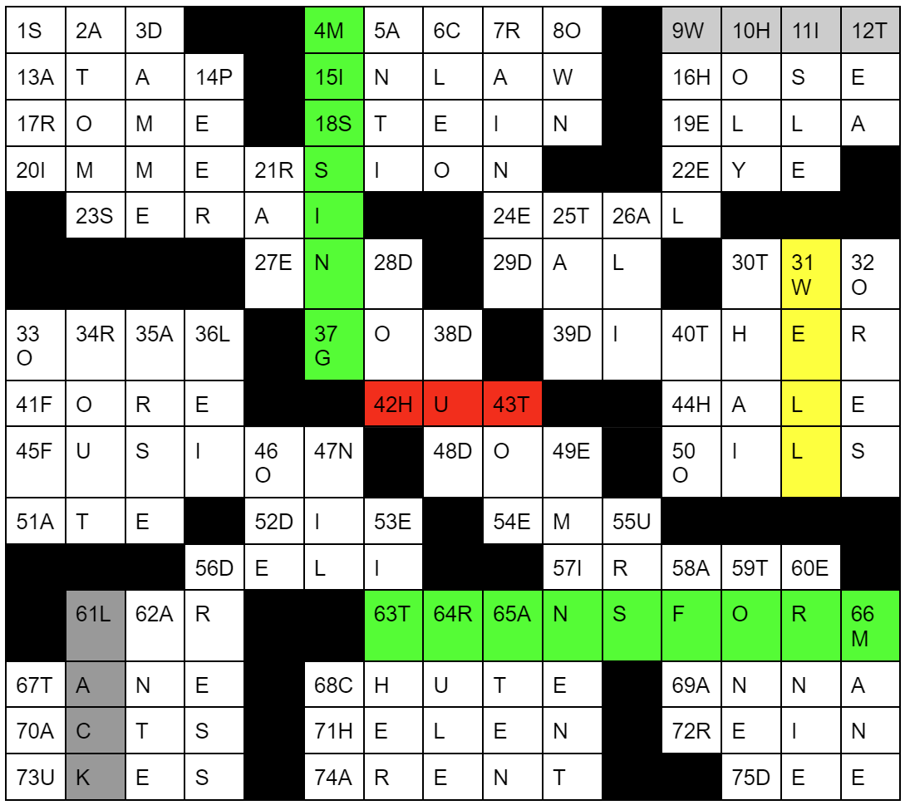

Solution: Colors
Answer: BLEW
Written by Jonathan
First solve the clues. Note that most of these clues don’t fit nicely in the grid. We have to apply 1 of 5 transformations to each clue before placing them in the grid. Quite a few of the clues have 1 extra letter, and probably the easier transformations are black and white, which require dropping 1 letter from either end of the word. From there, figuring out homophones for blue and the transformation for yellow should be possible, and red is probably going to be the hardest transformation to get. Along the way, noting that each of these transformations can be applied to the color words as well should aid guessing at the transformations. This is the final grid:

The 5 transformations are:
Black -> beheading (remove first letter)
Blue -> homophone
Red -> caesar shift by any amount
White -> curtailment (remove last letter)
Yellow -> replace first letter with last letter, drop second last letter
The unclued words spell “MISSING TRANSFORM”. We apply each transformation to each of the color words, getting:
BLUE->BLEW
WHITE->WHIT
BLACK->LACK
YELLOW->WELL
RED->HUT
Four of these words appear in the grid, and the missing transformation, and the answer to this puzzle, is the fifth, BLEW.
Appendix
Here is a quick clue breakdown:Across:
1. SADE -> SAD (White)
4. MACRON -> MACRO (White)
9. WIT -> WHIT (Blue)
13. PIPE -> ATAP (Red)
15. INLAWS -> INLAW (White)
16. JOSEPH -> HOSE (Yellow)
17. ROAM -> ROME (Blue)
18. STYNE -> STEIN (Blue)
19. HOOD -> ELLA (Red)
20. EMERSION -> IMMERSION (Blue)
22. GAG -> EYE (Red)
23. DERAILS -> SERAI (Yellow)
24. PETAL -> ETAL (Black)
27. INDIE -> END (Yellow)
29. VALID -> DAL (Yellow)
30. LOG -> TWO (Red)
33. AURAL -> ORAL (Blue)
37. WET -> GOD (Red)
39. WITHERED -> DITHER (Yellow)
41. FOUR -> FORE (Blue)
42. SHUT -> HUT (Black)
44. HAIL -> HALE (Blue)
45. LAYOUT -> FUSION (Red)
48. DOUGH -> DOE (Blue)
50. COILS -> OILS (Black)
51. EIGHT -> ATE (Blue)
52. DIET -> DIE (White)
54. AMUSE -> EMU (Yellow)
56. RELIED -> DELI (Yellow)
57. PIRATE -> IRATE (Black)
61. SHY -> LAR (Red)
63. TRANSFORM
67. STANE -> TANE (Black)
68. SHOOT -> CHUTE (Blue)
69. NAAN -> ANNA (Red)
70. FACTS -> ACTS (Black)
71. HELENA -> HELEN (White)
72. REINS -> REIN (White)
73. DUKES -> UKES (Black)
74. PARENT -> ARE’NT (Black)
75. DEEP -> DEE (White)
Down: (43)
1. SARIN -> SARI (White)
2. ATOMSK -> ATOMS (White)
3. DAMMED -> DAMME (White)
4. MISSING
5. ANTIC -> ANTI (White)
6. CLEON -> CLEO (White)
7. DRAINED -> RAINED (Black)
8. TOWN -> OWN (Black)
9. DOLLS -> WHEEL (Red)
10. WHOLLY -> HOLY (Blue)
11. ISLET -> ISLE (White)
12. HEART -> TEA (Yellow)
14. PIER -> PEER (Blue)
21. RAY -> RAE (Blue)
25. CADET -> TAD (Yellow)
26. ELIZA -> ALI (Yellow)
28. ALE -> DOH (Red)
30. TIE -> THAI (Blue)
31. WELLS -> WELL (White)
32. FRESCO -> ORES (Yellow)
33. OFFAL -> OFFA (White)
34. LION -> ROUT (Red)
35. PARSE -> ARSE (Black)
36. BUY -> LEI (Red)
38. EVE -> DUD (Red)
40. SHORT -> THO (Yellow)
43. TOW -> TOE (Blue)
46. LAB -> ODE (Red)
47. MILAN -> NIL (Yellow)
49. EMINENTI -> EMINENT (White)
53. NEITHER -> EITHER (Black)
55. DAB -> URS (Red)
56. PRESSED -> DRESS (Yellow)
58. JAFAR -> AFAR (Black)
59. STONED -> TONED (Black)
60. BERNIE -> ERNIE (Black)
61. JACKAL -> LACK (Yellow)
62. DANTE -> ANTE (Black)
64. RULER -> RULE (White)
65. EATEN -> ATEN (Black)
66. MAIN -> MANE (Blue)
67. ELF -> TAU (Red)
68. CHAD -> CHA (White)